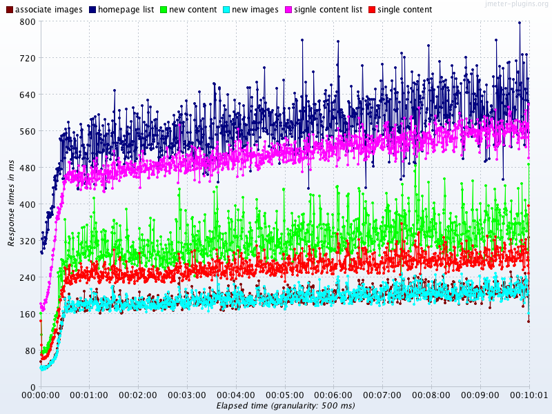
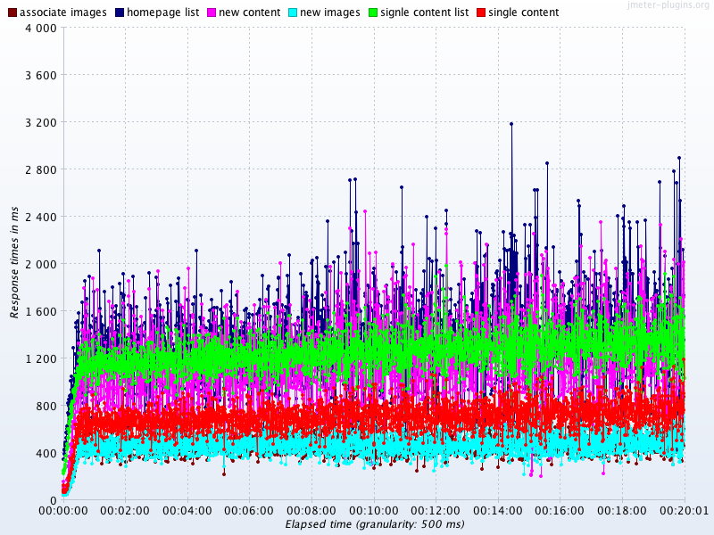
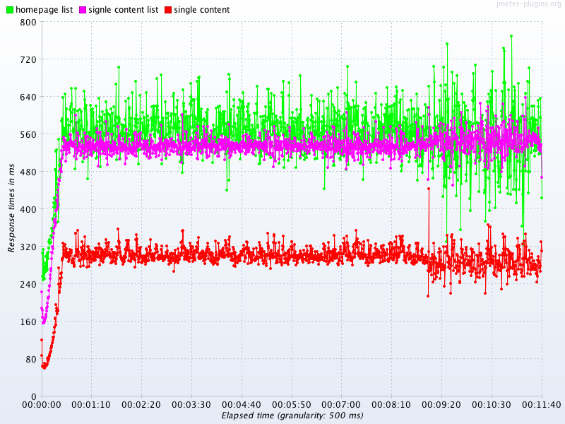
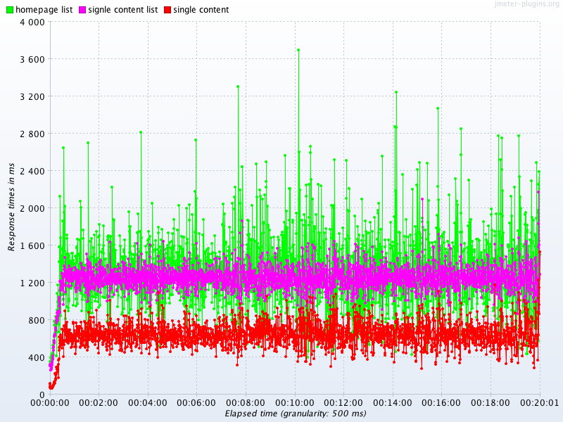

300 users generating 523 requests per second
| request | number per second |
|---|---|
| v1 content list | 1 |
| v1 article/gallery details | 66 |
| Rover list page_size=30 | 14 |
| Rover details | 221 |
| Rover list page_size=5 | 221 |
peak page views: 1,067,477 at Feb 13, 2016 10AM
peak users: 184,710 at Feb 28, 2016 18PM
average visit duration: 109 second.
average max page views: 297 per second
avarage max concurrency: 184,710 * 109 / 3600 = 5,593 'visitors' at once
| in-app | browser | |
|---|---|---|
| list | 132,009 | 6,417,853 |
| details | 31,300,386 | 105,059,962 |
| total | 31,432,395 | 111,477,815 |
| ratio | 237.1 | 16.4 |
in-app : browser = 1 : 3.75
300 page views per second
The page views are distributed as below:
0.1%: v1 content call
21.9%: v1 article or gallery call (with article_id or group_id)
4.5%: Rover list call ( page_size=30)
73.5%: Rover details call + Rover list call (page_size=5)
/v2/brands?name=cosmopolitan&page_size=1
/v2/sites?brand=901b88d0-a001-425c-90dd-2ab9a42017ce&sort=created_at
/v2/sections?slug=home&site=81bbdae2-81fb-4d95-b643-a0679795a2a4
/v2/content?page_size=30&sort=-publish_from&site=81bbdae2-81fb-4d95-b643-a0679795a2a4
/v2/contenttypes?sort=slug
/v2/content?display_id=225604&site=81bbdae2-81fb-4d95-b643-a0679795a2a4
/v2/displaytypes/0e773448-fdd5-4a6e-a07d-e6206b124db7
/v2/sites/81bbdae2-81fb-4d95-b643-a0679795a2a4
/v2/content?page_size=5&sort=-publish_from&id%3Anot-in=0dacce1b-12a2-4a55-89db-f2f87eb27f22&subsection=cbf84b5f-90fb-438b-92b2-6835440e1b52&site=81bbdae2-81fb-4d95-b643-a0679795a2a4
db.m4.4xlarge 1000 SSD, 160M throughput, 3000 iops
| request | number per second | size | throughput | iops |
|---|---|---|---|---|
| list page_size=30 | 15 | 300k | 4.5Mb | 30 |
| details | 287 | 10k | 2.8M | 287 |
| list page_size=5 | 221 | 50k | 11.1M | 221 |
| total | 18M | 538 |
| request | number per second |
|---|---|
| Rover list page_size=30 | 14 |
| Rover details | 221 |
| Rover list page_size=5 | 221 |
| new content | 60 |
| new image | 120 |
| new content_media | 120 |
| total | 456 read / 300 write |
Rover instances: 6, 6
Load Generators: 3
Users: 300
Constant Throughput Timer: 45000 per minute
Rover Read/Write test, targeting at 750 rps
reach 917rps aggregate report
So, without Fastly caching in front, current staging Rover infrastructure could handle:
As replica CPU almost reaches 100% in last test, we will see performance drop when increasing loads this time.
Rover instances: 6, 12
Load Generators: 3
Users: 300
Constant Throughput Timer: 72500 per minute
Rover Read/Write test, targeting at 1200 rps
311rps aggregate report
523 hits per second, 300 CU
| table | size |
|---|---|
| content | 91802 |
| images | 240007 |
| content_media | 86971 |
Rover Read test, targeting at 520 rps
704 rps aggregate report
523 hits per second, 300 CU
| table | size |
|---|---|
| content | 289481 |
| images | 634306 |
| content_media | 481599 |
Rover Read test with more data, targeting 520 rps
311 rps,aggregate report
bulk call for ramps_api lede images
use redis and cache machine
add more replicas
more postgres tuning
migration data